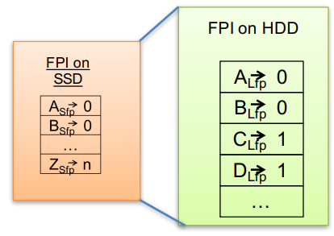

| Venue | Category |
|---|---|
| USENIX ATC'18 | Redesign Deduplication |
Can't We All Get Along? Redesigning Protection Storage for Modern Workloads1. SummaryMotivation of this paperNew DDFSImplementation and Evaluation2. Strength (Contributions of the paper)3. Weakness (Limitations of the paper)4. Future Works
- the impact of increasing numbers of small files
- higher deduplication ratios
need new algorithms
A new requirement is particularly demanding
involves large amounts of nonsequential I/O (NSIO)
need to rethink and redesign backup systems to enable optimizaed performance for non-traditional data protection workloads with nonsequential accesses.
a shift towards backing up individual files in their "native" format lead to millions or billions of individual fils (metadata overhead)
variable-size chunk or fixed-size chunk? need to align the unit of deduplication appropriately.
how to retrofit this to an existing disk-based data protection system.
currently, need to support both sequential accesses and random accesses in the workload.
to support NSIO, the system keeps the entire FPI in SSD. Since space is limited, it just store a short hash (4 bytes) rather than long hash (20 bytes) 
Short fingerprints would introduce the false positive (match is incorrect) (can be detected)
if the needed chunk is not found in the container referenced by the short fingerprint, then the full on-disk index is consulted. (latnecy is high, while this case is infrequency)
Can receive more improvement when the locality is bad.
- the locality of access within a contianer may be highly variable, and the reuse of specific data may by more commonplace.
- a data chunk might be written and then read, with a gap between the accesses that would be too large for the data to reside in a client or server DRAM cache.
- For large files such VM image, the lookup overhead is insignificant.
- But for modern workload where it includes many small files, the directory lookup becomes significant performance penalty.
A full copy of directory manager is now cached in SSD for performance.
straightforward, DM is allocated 5% of the SSD cache.
partition large files into regions and keeps a history of recent I/Os per region if a new I/O is not within a threshold distance of one of the previous 16 I/Os, it is considerd nonsequential.
split the backup and restore workload shares into sequential and nonsequential shares when meet RPC timeouts, I/O throttling per workload (implement an edge throttling mechanism)
nonsequential writes tend to consist of unique content disable query the fingerprint index for small nonsequential writes (<128KB) Any duplicate chunks will be removed during periodic garbage collection
need to update the file recipe to reference new chunks (delay until sufficient updates have been accumulated)
to fingerprint to container and compression region index (reduce the index lookup I/O) Reason: for NSIO, feature accesses are unlikely to remain within the same container.
new use cases that have block-aligned writes
- without SSD cache + without software optimization
- SSD cache metadata + without software optimization
- SSD cache data and metadata + without software optimization
- SSD cache data and metadata + software optimization
benefit both traditional and non-traditional backup and restore tasks
selectively storing metadata on SSDs.
NSIO and SIO, using SSDs for caching metadata combining SSD caching with software optimizations throughout its system
support also newer non-sequential workloads. (direct access for reads and writes in place) expect NSIO workloads to become more common as customers increase the frequency of backups.